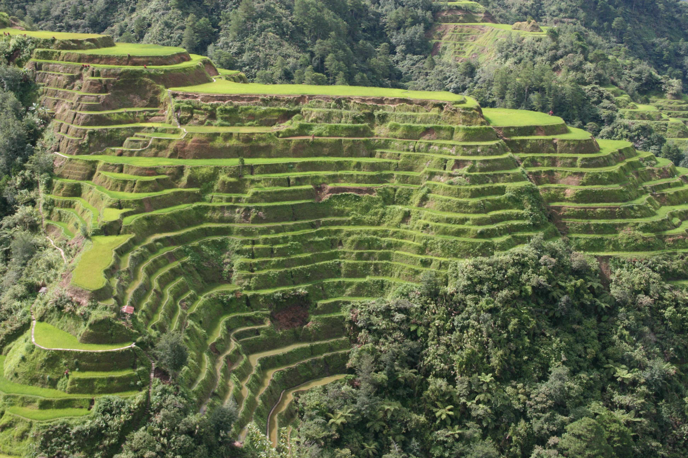
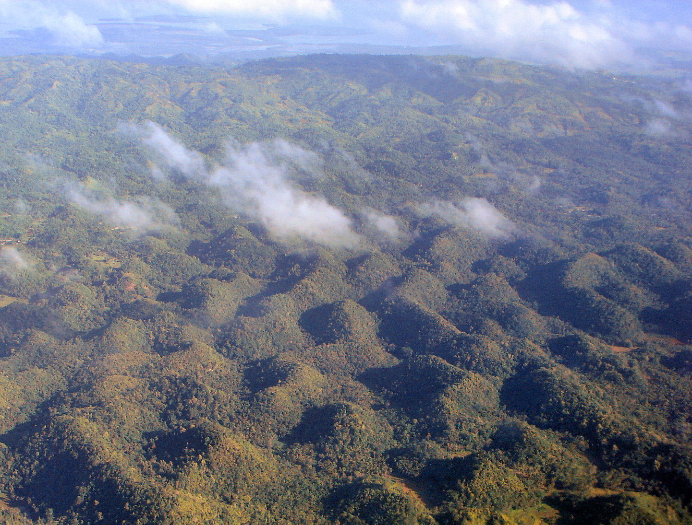

The Banaue Rice Terraces are ancient terraces carved into the mountains of Ifugao, Philippines, by the Ifugao people over 2,000 years ago. These terraces, often referred to as the "Eighth Wonder of the World," are a testament to the ingenuity of the Ifugao in creating a sustainable agricultural system using minimal tools. The terraces are fed by an ancient irrigation system that channels water from the rainforests above, allowing them to grow rice and vegetables. Today, while rice remains a staple, many younger Ifugaos have shifted to the hospitality industry, leading to ongoing conservation efforts to preserve this unique cultural and ecological landscape.

The Chocolate Hills are a unique geological formation located in the Philippines, specifically in the province of Bohol. They consist of over 1,200 conical hills made of limestone, which turn a rich chocolate color during the dry season and lush green during the rainy season. The hills are a symbol of Bohol's natural beauty and cultural identity, and they have been recognized as a national geological monument and a potential candidate for UNESCO World Heritage status. The formation of the Chocolate Hills began millions of years ago when the area was underwater, and the hills are a testament to the island's rich marine history and stunning landscape.
Intramuros, often referred to as the Walled City, is a historic district in Manila, Philippines, established by the Spanish in 1571. It is known for its Spanish colonial architecture, including iconic structures like the San Agustin Church and Manila Cathedral. Intramuros served as the center of Spanish political, military, and religious power for over 300 years and was the seat of government during the Spanish colonial period. Today, it is a significant cultural landmark and a popular tourist destination, showcasing a blend of history and modernity.